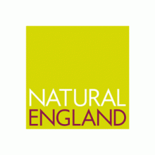

Natural England announced today that it has successfully reduced its carbon emissions by 50%. In an ambitious four-year programme, the government’s wildlife and conservation advisor has delivered a series of carbon-saving projects that have cut carbon emissions in half compared to 2007 levels, saving over £1.75m per year in the process.
Dr Helen Phillips, Natural England’s Chief Executive, said: “The Natural England Board set a hugely ambitious target to halve our carbon emissions by the end of 2010. As a new environmental organisation, we wanted to demonstrate our credibility in tackling climate change and show that significant reductions in carbon could be rapidly achieved, whilst maintaining our customer service and delivering important financial savings”
She continued: “A 50% reduction in carbon emissions is a remarkable achievement and, at a time when the public sector is being asked to make sizeable carbon reductions, shows that there is real scope for major change. Everyone in the organisation has embraced this challenge, and been determined to turn Natural England into a business that places carbon at the heart of its decision-making. I applaud the commitment, creativity and real sense of purpose they have shown.”
Environment Secretary, Caroline Spelman said: “I congratulate everyone at Natural England for achieving this target. Government and its agencies must lead by example if we are to cut our carbon emissions, cut costs and support green, low-carbon growth. Climate change affects all of us, so anything we can do as organisations, businesses and consumers to meet the challenge makes a difference – not just in the bits of government with responsibility for the environment, but in all walks of life.”
Energy and Climate Change Minister, Greg Barker MP said: “This is highly impressive work by Natural England. It is great to see examples of organisations who are taking their responsibility for cutting emissions seriously and a 50% reduction shows just what can be done when people are challenged to make a difference.”
In 2007 Natural England carried out a wide-ranging review of carbon usage to establish the baseline against which a 50% reduction would be measured. Throughout, the principle was that reductions would be achieved as ethically and as fairly as possible, without any carbon offsetting, loss of customer service or transferring of a carbon burden onto suppliers. It was also established that the programme would need to be cost-neutral within four years. A series of projects were then put in place to identify where savings could be made and to measure progress against agreed targets. These included:
- empowering staff to take ‘ownership’ of their carbon footprints by establishing carbon reduction targets for teams, offering flexible working policies such as working from home, and introducing new technologies such as tele- and video-conferencing;
- setting up a ‘Sustainability Champions Network’ of over 130 enthusiastic staff to advocate and support more sustainable ways of working;
- acting on its ‘Good Ideas’ suggestions from staff, such as converting its National Nature Reserve vehicles to run on used biodiesel derived from cooking oil;
- lending staff folding-bikes from its main offices, and bicycles on its National Nature Reserves as an alternative to 4x4 vehicle transport;
- designing posters telling people how much carbon they could save by walking or cycling, and developing a carbon calculator for comparing different methods of public transport;
- using a centralised rail booking service with office-based ticket machines to enable staff to access tickets quickly and efficiently;
- enlisting the help of the Energy Saving Trust to put staff through a course to learn smarter driving techniques – including checking tyre pressures on pool cars, as incorrect pressure has a huge impact on running costs and on the environment.
In additional to the cultural changes adopted by its staff, Natural England worked closely with its landlord, Defra, and facilities management provider, Interserve, to improve the energy performance of its buildings by:
- installing energy saving technology such as live carbon monitors; and ‘intelligent controllers’ for lighting, so that overhead lights only come on when someone is nearby;
- substantially reducing the number of offices from 68 offices in 2007 to 30 offices in 2011, and conducting a ‘right-sizing’ programme for the floor space of existing offices.
Natural England was awarded a two-year Carbon Trust Standard certification in 2009. In March 2011 the achievement of the 50% target was confirmed by independent auditors Price Waterhouse Coopers, who verified Natural England’s ‘carbon footprint methodology’ and the robustness of its data collection and reporting processes. Following this, Natural England is now able to claim that its 2010 emissions are 3,727 tonnes lower than those that were measured for 2007 – a 50% fall in less than four years.
ENDS
Notes to Editors:
About Natural England
Natural England is the government’s independent adviser on the natural environment. Established in 2006 our work is focused on enhancing England’s wildlife and landscapes and maximising the benefits they bring to the public.
- We establish and care for England’s main wildlife and geological sites, ensuring that over 4,000 National Nature Reserves and Sites of Special Scientific Interest are looked after and improved.
- We work to ensure that England’s landscapes are effectively protected, designating England’s National Parks, Areas of Outstanding Natural Beauty and Marine Conservation Zones, and advising widely on their conservation.
- We run Environmental Stewardship and other green farming schemes that deliver over £400 million a year to farmers and landowners, enabling them to enhance the natural environment across two thirds of England’s farmland.
- We fund, manage, and provide scientific expertise for hundreds of conservation projects each year, improving the prospects for thousands of England’s species and habitats.
- We promote access to the wider countryside, helping establish National Trails and coastal trails and ensuring that the public can enjoy and benefit from them.
For more information contact:
Emma Lusby, regional press officer, 0300 060 4231 / emma.lusby@naturalengland.org.uk
Or the National Press Office on 0845 603 9953, press@naturalengland.org.uk / out of hours 07970 098 005
For further information about Natural England please visit: www.naturalengland.org.uk